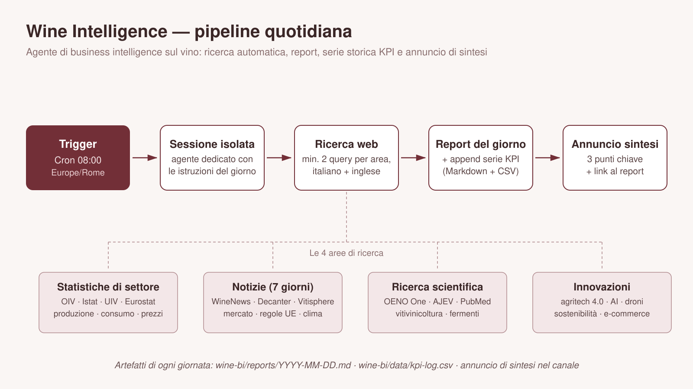

Report più recente
Rotazione geografica di oggi: Portogallo (giorno del mese 28 mod 10 → indice 8). Seconda area approfondita in base all'attualità: USA / California (metà del raccolto senza compratore, vendite retail in calo, ma prime riprese delle spedizioni italiane negli USA). Già trattati nei giorni scorsi e ripresi solo come aggiornamento: Champagne 2026 (vendemmia più precoce di sempre, resa 8.800 kg/ha), dazi UE-USA al 15%, direttiva UE EmpCo.
Sintesi esecutiva
- Portogallo (area approfondita): raccolto 2026 in crescita ma Douro in allarme — l'IVV stima la produzione nazionale a ~6,7 milioni di ettolitri (+12%), ma nel Douro i viticoltori avvertono che una parte dell'uva 2026 rischia di restare invenduta: il modesto aumento delle quote Porto non basta a coprire i costi in forte salita e la domanda incerta alla vigilia della raccolta.
- California (2ª area): metà dell'uva da vino arriva in vendemmia senza compratore — dopo un crush 2025 di 2,62 milioni di tonnellate (il minimo dal 1999), anche il 2026 si presenta con enormi eccedenze: circa il 50% delle uve da vino non ha ancora un acquirente e le vendite retail di vino negli USA sono calate del 4,1% nelle quattro settimane al 1 agosto.
- Italia: export H1 2026 a -6,2% ma le spedizioni negli USA tornano a crescere — il primo semestre chiude a ~3,6 miliardi di € a valore (-6,2%) e -4% a volume, ma i dati recenti mostrano due mesi consecutivi in rialzo verso gli Stati Uniti (primo recupero dall'inizio del 2025) e cresce il Brasile (+13,7%).
- Francia: vendemmia verso il minimo da 70 anni ed export giù — il Paese si avvia al raccolto più basso degli ultimi 70 anni e le esportazioni del primo semestre perdono il 2,2% a valore, penalizzate dal calo dei formati confezionati.
- Ricerca: la vite sotto stress tra siccità, caldo e patogeni — OENO One pubblica tre nuovi studi (risposta fisiologica del Syrah a siccità/luce/caldo, modellazione predittiva della peronospora, lieviti endofiti contro il marciume bianco), mentre Cornell dimostra che il colore spiega solo l'8% delle valutazioni dei consumatori.
Statistiche & dati
| Indicatore | Valore | Variazione / Nota | Fonte |
|---|---|---|---|
| Produzione vino Portogallo 2026 (stima IVV) | ~6,7 mln hl | +12% sulla campagna precedente | InfoWine, ECO Sapo |
| Export vino Italia H1 2026 — valore | ~3,6 mld € | -6,2% a valore, -4% a volume | Italia a Tavola, VinieVino |
| Spedizioni vino italiano negli USA | 2 mesi consecutivi in rialzo | primo recupero dall'inizio del 2025 | Vinetur |
| Export vino Francia H1 2026 — valore | -2,2% | calo dei formati confezionati | Vinetur |
| Vendemmia vino Francia 2026 | minimo da 70 anni | siccità e ondate di calore | Vinetur |
| Uva da vino California 2026 senza compratore | ~50% | eccedenze strutturali, domanda debole | Vinetur |
| Vendite retail vino USA (4 sett. al 1/8/2026) | -4,1% | domanda debole e cambio di abitudini | Vinetur |
| Crush uva California 2025 | 2,62 mln ton | il più piccolo dal 1999 | Terrain Ag |
Notizie
- Portogallo (1ª area): Douro, raccolto 2026 a rischio invenduto — la vendemmia è in corso tra vendemmie anticipate e caldo prolungato; dopo il modesto aumento delle quote Porto, i piccoli viticoltori del Douro temono che una parte consistente dell'uva non trovi compratore, tra costi agricoli elevati e domanda incerta. (Vinetur, For The Love Of Port)
- USA/California (2ª area): metà dell'uva da vino senza acquirente — la vendemmia californiana conferma un mercato in eccesso di offerta: circa il 50% delle uve da vino è ancora senza compratore e il segmento retail continua a contrarsi (-4,1% nelle quattro settimane al 1 agosto). (Vinetur)
- Italia: export in chiaroscuro e nuovo decreto per l'enoturismo — primo semestre a -6,2% a valore, ma le spedizioni negli USA tornano a crescere per due mesi consecutivi; in parallelo il Governo lancia un decreto di sostegno all'enoturismo nelle regioni vitivinicole. (Vinetur, Italia a Tavola)
- Nuova Zelanda: export in crescita dell'8% — le esportazioni di vino salgono a 306,2 milioni di litri, contro una tendenza globale in contrazione: un segnale di resilienza del Nuovo Mondo nel segmento bianco. (Vinetur)
- UE: l'IGP Atlantique si estende ai vini parzialmente dealcolizzati — Bruxelles approva l'estensione dell'indicazione geografica ai vini a ridotto contenuto alcolico, aprendo la strada a una nuova categoria di prodotto IGP. (Vinetur)
- Piemonte: rubate 3.000 bottiglie di Barolo da una cantina di rilievo — un furto di alto valore colpisce il fine wine piemontese, riportando l'attenzione sui rischi di sicurezza e tracciabilità delle bottiglie di pregio. (Vinetur)
Ricerca & Innovazione
- OENO One (25/9/2026): risposta fisiologica del Syrah a siccità, esposizione alla luce e stress termico — lo studio (Shtai et al.) analizza come la vite regola fotosintesi, stato idrico e maturazione sotto ondate di calore combinate a deficit idrico: una base per gestire il vigneto nel clima che cambia. (OENO One)
- **OENO One (25/9/2026): modellazione predittiva della germinazione delle oospore di *Plasmopara viticola*** — integrando monitoraggi di lungo periodo, i ricercatori (Leoni et al.) migliorano la previsione delle infezioni di peronospora, il principale patogeno fungino della vite. (OENO One)
- OENO One (24/9/2026): lieviti endofiti della vite come antagonisti del marciume bianco — lo studio (Del Frari et al.) identifica lieviti associati alla vite capaci di contrastare il fungo del marciume bianco: una promettente leva di biocontrollo senza nuovi prodotti di sintesi. (OENO One)
- Cornell: il colore spiega solo l'8% delle valutazioni dei consumatori — uno studio statunitense ridimensiona il ruolo della componente visiva: nelle valutazioni di consumo il gusto e l'aroma pesano molto più del colore, con implicazioni per il marketing del vino. (Vinetur)
- Mannoproteine da lieviti ramificati mantengono in sospensione i tannini durante l'affinamento — la forma dei polisaccaridi di lievito determina la deposizione dei sedimenti nel vino durante la crianza, suggerendo nuovi approcci per stabilizzare struttura e limpidezza. (Vinetur)
Conoscenza enologica del giorno
Il Porto: la fortificazione come tecnica di controllo della fermentazione
In un giorno dedicato al Portogallo, il tema è la tecnica che definisce il suo vino più celebre: la fortificazione. Il Porto nasce nel Douro nella seconda metà del XVII secolo, quando il commercio inglese cercava un vino capace di sopportare i viaggi via mare verso Londra. La soluzione — ancora oggi il cuore del disciplinare — è aggiungere aguardente viticola (distillato di vino) alla massa in fermentazione.
Il meccanismo è chimico-fisico: l'aggiunta di alcol porta il tenore alcolico del mosto a circa 18-20% vol., un livello che inibisce i lieviti (*Saccharomyces cerevisiae* è sensibile all'etanolo) e arresta la fermentazione. Il risultato è un vino dolce, perché gran parte degli zuccheri dell'uva resta non fermentata, e alcolico, perché le parti si sommano: l'alcol sviluppato dalla fermentazione parziale più quello aggiunto con l'aguardente. Il momento dell'aggiunta — precoce o tardiva — decide il grado di dolcezza: interviene presto per il Ruby e i Porto giovani, più tardi per i Tawny destinati a lunghe ossidazioni in botte.
Da qui derivano anche gli stili: Ruby (fruttato, affinato in acciaio o legno grande), Tawny (ossidativo, note di frutta secca e caramello), Vintage (dichiarato solo in annate eccezionali, affina in bottiglia). La lezione è doppia: la fortificazione è nata come espediente per il trasporto ed è diventata l'identità stessa di un vino, dimostrando quanto le contingenze commerciali possano forgiare uno stile.
Fonti
- OENO One — Physiological response of grapevine (cv. Shiraz) to drought, light exposure and heat stress (25/9/2026)
- OENO One — Climatic drivers of *Plasmopara viticola* oospore germination (25/9/2026)
- OENO One — The potential of endophytic yeasts of grapevine as antagonists of white rot (24/9/2026)
- OENO One — Characterisation of polyphenols and antioxidant potential of pomace by-product extracts (9/9/2026)
- Vinetur — Latest trends and markets
- Vinetur (EN) — Wine news, culture and international markets
- InfoWine — Vindima 2026 em Portugal: produção deverá crescer 12%
- ECO Sapo — Produção de vinho vai aumentar 12% na próxima vindima (5/8/2026)
- For The Love Of Port — 2026 Vindima News from Douro (12/9/2026)
- Italia a Tavola — Vino italiano: gli Usa trascinano giù l'export (11/9/2026)
- VinieVino — Trend del vino in Italia
- Terrain Ag — 2025 Grape Crush Not as Small as Expected
- Wine&Vintage — Champagne 2026: the harvest that forced the region to change
- WINW — U.S. Precision Viticulture Market
Indicatori chiave
| Data | Indicatore | Valore | Unità | Fonte |
|---|---|---|---|---|
| 28 settembre 2026 | crush uva california 2025 | 2.62 | mln_tons | terrainag.com |
| 28 settembre 2026 | export vino francia h1 2026 valore yoy | -2.2 | % | vinetur.com |
| 28 settembre 2026 | export vino italia h1 2026 valore | 3.6 | mld_eur | italiaatavola.net |
| 28 settembre 2026 | export vino italia h1 2026 valore yoy | -6.2 | % | italiaatavola.net |
| 28 settembre 2026 | produzione vino portogallo 2026 | 6.7 | mhl | infowine.com |
| 28 settembre 2026 | produzione vino portogallo 2026 yoy | 12 | % | infowine.com |
| 28 settembre 2026 | uva vino california 2026 senza compratore | 50 | % | vinetur.com |
| 28 settembre 2026 | vendite retail vino usa var 4sett ago2026 | -4.1 | % | vinetur.com |
| 27 settembre 2026 | export agricoli sudafrica h1 2026 yoy | 11 | % | ebnewsdaily.co.za |
| 27 settembre 2026 | export vino sudafrica 2025 volume | 264 | mln_litri | thefarmersjournal.com |
| 27 settembre 2026 | fatturato bodegas spagna 2026 | 8566 | mln_eur | vinetur.com |
| 27 settembre 2026 | gemme champagne distrutte gelo 2026 | 40 | % | terredevins.com |
| 27 settembre 2026 | import vino uk h1 2026 volume | -22 | % | vinetur.com |
| 27 settembre 2026 | liv ex fine wine 100 agosto 2026 mom | 0.7 | % | vinumfinewines.sg |
| 27 settembre 2026 | resa champagne 2026 | 8800 | kg_per_ha | terredevins.com |
| 27 settembre 2026 | turnaround container sudafrica set 2026 | 7.7 | giorni | portstrategy.com |
| 23 settembre 2026 | bottle weight accord target 2026 | 420 | g | swroundtable.org |
| 23 settembre 2026 | consumo vino spagna gen mag 2026 yoy | -7.3 | % | lagacetadelvino.com |
| 23 settembre 2026 | import vino usa h1 2026 valore yoy | -25.2 | % | manzanoswinesusa.com |
| 23 settembre 2026 | mercato vino no alcol 2026 | 3.12 | mld_usd | businessresearchinsights.com |
| 23 settembre 2026 | produzione vino francia 2026 | 33.9 | mhl | thegrapereset.com |
| 23 settembre 2026 | produzione vino francia 2026 yoy | -6 | % | theguardian.com |
| 23 settembre 2026 | produzione vino spagna 2026 prevista | 30 | mhl | agronewscastillayleon.com |
| 22 settembre 2026 | alcohol duty uk gettito mag lug 2026 | 2936 | mln_gbp | gov.uk |
| 22 settembre 2026 | export vino inglese 2025 yoy | 35 | % | winegb.co.uk |
| 22 settembre 2026 | export vino italia agosto 2026 | 634 | mln_eur | inumeridelvino.it |
| 22 settembre 2026 | export vino italia agosto 2026 valore yoy | -2.6 | % | inumeridelvino.it |
| 22 settembre 2026 | giacenze vino italia vigilia vendemmia 2026 | 42.6 | mhl | agronotizie.imagelinenetwork.com |
| 22 settembre 2026 | liv ex turnover agosto 2026 yoy | 15 | % | vinumfinewines.com |
| 22 settembre 2026 | produzione vino uk 2025 | 124377 | hl | thedrinksbusiness.com |
| 22 settembre 2026 | vino fermo uk volumi variazione da 2022 23 | -8 | % | thedrinksbusiness.com |
| 21 settembre 2026 | aste fine wine sothebys H1 2026 | 49.2 | mln_usd | vinetur.com |
| 21 settembre 2026 | bevitori vino usa adulti | 76 | mln | hwy29creative.com |
| 21 settembre 2026 | consumo vino mondiale 2025 | 208 | mhl | forbes.com |
| 21 settembre 2026 | consumo vino mondiale 2025 yoy | -2.7 | % | forbes.com |
| 21 settembre 2026 | dtc usa 2025 volume yoy | -15 | % | sovos.com |
| 21 settembre 2026 | liv ex fine wine 100 ago2026 | 0.7 | % | vinumfinewines.com |
| 21 settembre 2026 | produzione vino mondiale 2025 | 227 | mhl | vinovonk.com |
| 21 settembre 2026 | spesa consumatori usa vino 2025 | 115 | mld_usd | commercial.bmo.com |
| 19 settembre 2026 | export vino fermo germania 2025 valore | 377 | mln_eur | deutscher-weinbauverband.de |
| 19 settembre 2026 | export vino fermo germania 2025 volume | 1.203 | mhl | deutscher-weinbauverband.de |
| 19 settembre 2026 | mercato viticoltura precisione usa 2026 | 2.85 | mld_usd | vinetur.com |
| 19 settembre 2026 | produzione vino germania 2025 | 7.55 | mhl | destatis.de |
| 19 settembre 2026 | produzione vino germania 2025 yoy | -2.6 | % | destatis.de |
| 19 settembre 2026 | valore agricolo sonoma 2025 yoy | -10 | % | winebusiness.com |
| 19 settembre 2026 | valore raccolta winegrape sonoma 2025 | 523 | mln_usd | bohemian.com |
| 19 settembre 2026 | vendemmia germania 2026 inizio anticipo | 1 | settimane | deutscheweine.de |
| 18 settembre 2026 | export spumanti italiani H1 2026 | 1 | mld_eur | winenews.it |
| 18 settembre 2026 | export spumanti italiani H1 2026 volume | 252.2 | mln_l | winenews.it |
| 18 settembre 2026 | export vino italiano usa gen-lug2026 valore yoy | -11 | % | unioneitalianavini.it |
| 18 settembre 2026 | export vino italiano usa luglio2026 valore yoy | quasi_10 | % | unioneitalianavini.it |
| 18 settembre 2026 | import vino usa H1 2026 valore yoy | -25.2 | % | thedrinksbusiness.com |
| 18 settembre 2026 | import vino usa H1 2026 volume yoy | -16.8 | % | thedrinksbusiness.com |
| 18 settembre 2026 | mercato packaging vino 2026 | 7.32 | mld_usd | towardspackaging.com |
| 18 settembre 2026 | prezzo medio import vino usa H1 2026 | 4.52 | eur_l | thedrinksbusiness.com |
| 18 settembre 2026 | sostegno governo portogallo douro 2026 | 12 | mln_eur | aman-alliance.org |
| 18 settembre 2026 | stima vendemmia douro 2026 | 1.4 | mhl | theportugalbrief.pt |
| 18 settembre 2026 | stima vendemmia douro 2026 yoy | 25 | % | theportugalbrief.pt |
| 18 settembre 2026 | stima vendemmia francia 2026 | 33.8 | mhl | winenews.it |
| 18 settembre 2026 | stima vendemmia portogallo 2026 | 6.7 | mhl | theportugalbrief.pt |
| 18 settembre 2026 | stima vendemmia portogallo 2026 yoy | 12 | % | theportugalbrief.pt |
| 18 settembre 2026 | vendemmia portogallo 2026 27 | 6.7 | mhl | vinha.co.uk |
| 18 settembre 2026 | vendemmia portogallo 2026 27 yoy | 12 | % | vinha.co.uk |
| 16 settembre 2026 | export vino italiano canada H1 2026 | 208.6 | mln_eur | winenews.it |
| 16 settembre 2026 | export vino spagna H1 2026 valore yoy | -10.2 | % | wine-intelligence.com |
| 16 settembre 2026 | export vino spagna H1 2026 volume yoy | -20.2 | % | wine-intelligence.com |
| 16 settembre 2026 | mercato precision viticulture 2026 | 6.82 | mld_usd | fortunebusinessinsights.com |
| 16 settembre 2026 | prezzo uva cava 2026 minimo | 0.25 | eur_kg | wine-searcher.com |
| 16 settembre 2026 | stima vendemmia spagna 2026 | 31.5 | mhl | the-silent-luxury.com |
| 16 settembre 2026 | vendemmia rias baixas 2026 | 49 | mln_kg | vinetur.com |
| 16 settembre 2026 | vendemmia rioja 2026 uva raccolta | 225.5 | mln_kg | riojawine.com |
| 15 settembre 2026 | crush uva vino australia 2026 | 1.27 | mln_ton | wineaustralia.com |
| 15 settembre 2026 | crush uva vino australia 2026 yoy | -19 | % | wineaustralia.com |
| 15 settembre 2026 | danno dazi usa15 vino italiano | 317 | mln_eur | unioneitalianavini.it |
| 15 settembre 2026 | export vino australia giu2026 | 2.30 | mld_aud | wineaustralia.com |
| 15 settembre 2026 | export vino australia giu2026 yoy | -7 | % | wineaustralia.com |
| 15 settembre 2026 | export vino australia volume giu2026 | 598 | mln_l | thedrinksbusiness.com |
| 15 settembre 2026 | valore vendemmia australia 2026 | 837 | mln_aud | wineaustralia.com |
| 15 settembre 2026 | valore vendemmia australia 2026 yoy | -26 | % | wineaustralia.com |
| 14 settembre 2026 | champagne produzione 2026 vs 2025 | -49 | % | reuters.com |
| 14 settembre 2026 | export mondiale vino 2025 | 94.8 | mhl | reuters.com |
| 14 settembre 2026 | export mondiale vino 2025 yoy | -4.7 | % | reuters.com |
| 14 settembre 2026 | export vino italiano 5m 2026 | sotto_3 | mld_eur | gamberorosso.it |
| 14 settembre 2026 | mercato precision viticulture 2026 | 6.82 | mld_usd | fortunebusinessinsights.com |
| 14 settembre 2026 | produzione francia 2026 stima | 33.9 | mhl | theguardian.com |
| 13 settembre 2026 | champagne produzione 2026 vs 2025 | -49 | % | reuters.com |
| 13 settembre 2026 | consumo mondiale vino 2025 | 208 | mhl | oiv.int |
| 13 settembre 2026 | export vino italiano T1 2026 | 2.34 | mld_eur | unioneitalianavini.it |
| 13 settembre 2026 | export vino italiano T1 2026 yoy | -6.8 | % | unioneitalianavini.it |
| 13 settembre 2026 | export vino italiano usa T1 2026 yoy | -15.4 | % | liberacr.it |
| 13 settembre 2026 | produzione francia 2026 stima | 33.9 | mhl | theguardian.com |
| 12 settembre 2026 | champagne resa commerciale 2026 | 8800 | kg_ha | winecap.com |
| 12 settembre 2026 | export vino italiano S1 2026 usa valore yoy | -14.1 | % | askanews.it |
| 12 settembre 2026 | export vino italiano S1 2026 valore yoy | -6.2 | % | vinonews24.it |
| 12 settembre 2026 | export vino italiano S1 2026 volume yoy | -4 | % | vinonews24.it |
| 12 settembre 2026 | import vino cina 2025 | 1.4 | mld_usd | fas.usda.gov |
| 12 settembre 2026 | produzione vino regno unito 2025 | 124377 | hl | thedrinksbusiness.com |
| 11 settembre 2026 | consumi vino usa T1 2026 volume yoy | -8.3 | % | winenews.it |
| 11 settembre 2026 | crush uve california 2025 | 2.6 | mln_ton | farmprogress.com |
| 11 settembre 2026 | gdo vino spumante italia T2 2026 yoy | -2 | % | inumeridelvino.it |
| 11 settembre 2026 | iwc2026 medaglie francia | 849 | medaglie | vinetur.com |
| 11 settembre 2026 | spesa consumer vino usa 2025 | 115 | mld_usd | winebusiness.com |
| 11 settembre 2026 | vigneti estirpati california 2025 | 38 | mila_acri | nytimes.com |
| 11 settembre 2026 | volume mercato vino usa 2025 yoy | -4 | % | bmo_via_winebusiness.com |
| 10 settembre 2026 | grant napa green sostenibilita 2026 | 3 | mln_usd | wineindustryadvisor.com |
| 10 settembre 2026 | import mondiale vino T1 2026 valore | 7.4 | mld_eur | winenews.it |
| 10 settembre 2026 | livex valore scambi gen2026 vs dic2025 | 21.7 | % | vin-x.com |
| 10 settembre 2026 | stima produzione vino castilla la mancha 2026 27 | 19 | mhl | democrata.es |
| 10 settembre 2026 | variazione import mondiale vino T1 2026 yoy | -7.5 | % | winenews.it |
| 9 settembre 2026 | consumo mondiale vino 2025 | 208 | mhl | oiv.int |
| 9 settembre 2026 | export vino italiano extraUE gen-apr2026 yoy | -8.5 | % | unioneitalianavini.it |
| 9 settembre 2026 | export vino italiano gen-feb2026 yoy | -13.3 | % | winemeridian.com |
| 9 settembre 2026 | giacenze vino italia 31luglio2026 | 42.6 | mhl | agronotizie.imagelinenetwork.com |
| 9 settembre 2026 | produzione mondiale vino 2025 | 227 | mhl | oiv.int |
| 9 settembre 2026 | stima produzione francia 2026 | 33.9 | mhl | thegrapereset.com |
| 9 settembre 2026 | variazione giacenze vino italia yoy | 6.9 | % | vinetur.com |
Archivio report
- Portogallo (area approfondita): raccolto 2026 in crescita ma Douro in allarme — l'IVV stima la produzione nazionale a ~6,7 milioni di ettolitri (+12%), ma nel Douro i viticoltori avvertono che una parte dell'uva 2026 rischia di restare invenduta: il modesto aumento delle quote Porto non basta a coprire i costi in forte salita e la domanda incerta alla vigilia della raccolta.
- California (2ª area): metà dell'uva da vino arriva in vendemmia senza compratore — dopo un crush 2025 di 2,62 milioni di tonnellate (il minimo dal 1999), anche il 2026 si presenta con enormi eccedenze: circa il 50% delle uve da vino non ha ancora un acquirente e le vendite retail di vino negli USA sono calate del 4,1% nelle quattro settimane al 1 agosto.
- Italia: export H1 2026 a -6,2% ma le spedizioni negli USA tornano a crescere — il primo semestre chiude a ~3,6 miliardi di € a valore (-6,2%) e -4% a volume, ma i dati recenti mostrano due mesi consecutivi in rialzo verso gli Stati Uniti (primo recupero dall'inizio del 2025) e cresce il Brasile (+13,7%).
- Champagne 2026: vendemmia mai così precoce e resa ai minimi — l'apertura della raccolta è la più anticipata di sempre (8-22 agosto per comune, con Montgueux già al 6 agosto) e la resa commercializzabile è fissata a 8.800 kg/ha, il quarto calo consecutivo (9.000 nel 2025, 10.000 nel 2024); il gelo primaverile ha distrutto circa il 40% delle gemme.
- Sud Africa (area approfondita): raccolto 2026 rivisto al rialzo, export 2025 in forte calo — la terza stima di campagna indica un raccolto più ampio del previsto e i produttori riguadagnano fiducia, ma le esportazioni 2025 hanno chiuso a 264 milioni di litri (-13,8%), con il bulk giù del 20%; a settembre gli scioperi nei porti hanno più che raddoppiato i tempi di rotazione dei container.
- Fine wine: Michael Burry sostiene il vino come asset tangibile — l'investitore di "The Big Short" argomenta pubblicamente la tesi del vino fine come bene fisico a offerta finita; agosto è stato il miglior mese da tempo (Liv-ex Fine Wine 100 +0,7%, +1,1% da inizio anno) e il report di settembre segna 490 etichette in rialzo contro 347 in calo.
- Francia verso un raccolto ai minimi da 70 anni — il ministero dell'Agricoltura stima meno di 34 mhl (≈33,9 mhl) per il 2026, -6% sul 2025 e -17% sulla media quinquennale: terzo anno consecutivo di calo, con la superficie vitata che continua a ridursi (≈5.000 ha estirpati nell'ultima campagna).
- Bordeaux 2026 è la vendemmia più calda della storia — con la raccolta avviata a metà agosto, il millésimo è il più precoce e caldo dal 1893; la primavera più calda mai registrata e un luglio con piogge -67% hanno compresso le rese e alzato gli zuccheri a scapito dell'acidità.
- Regole UE: il conto alla rovescia EmpCo scade il 27 settembre — la direttiva sulle dichiarazioni "green" diventa applicabile senza periodo transitorio: etichette, claim ambientali e informazioni di durabilità vanno conformati anche per i prodotti già sul mercato.
- Vendemmia Italia al pieno: qualità promettente, ma nessuna previsione ufficiale — UIV fotografa un anticipo record con uve sane in tutte le regioni; Assoenologi e UIV non pubblicano stime prima dei dati finali a fine campagna, mentre le cantine arrivano alla vendemmia con 42,6 mhl di giacenze e prezzi dello sfuso sotto pressione.
- Export italiano torna in negativo ad agosto — dopo il rimbalzo di luglio, le esportazioni di vino segnano 634 mln € (-2,6% in valore, -2,8% nei volumi): la ripresa USA non basta a compensare il rallentamento generale.
- Regno Unito (area approfondita): la WSTA chiede il taglio dell'alcohol duty — nei tre esercizi dal 2022/23 il vino fermo perde l'8% di volumi e la dogana conferma gettiti fiscali sostanzialmente stabili (+1%); intanto la vendemmia inglese 2026 è la più precoce di sempre.
- USA (area approfondita): perde bevitori ma non valore — i report 2026 di SVB, BMO e Sovos fotografano un mercato americano che cala nei volumi (canale DTC 2025 a -15% di volume e -6% di valore) ma in cui la spesa dei consumatori cresce del 3% a oltre 115 mld $: la forbice tra le cantine in crescita a doppia cifra e la metà più debole in forte calo si allarga.
- Il consumo mondiale scende ancora, la produzione resta bassa — secondo i dati OIV ripresi da Forbes, il consumo globale di vino nel 2025 è sceso a 208 mhl (-2,7%, -6 mhl), mentre la produzione si ferma a 227 mhl, terzo anno consecutivo sotto la media storica: l'equilibrio del mercato si gioca ora più sul consumo che sull'offerta.
- Francia (seconda area): vendemmia mai così precoce, Bordeaux oltre -20% — l'Europa firma la raccolta più anticipata di sempre; la Francia stima volumi in calo, con Bordeaux in perdita oltre il 20% e la Champagne che fissa il tetto produttivo a 250 mln di bottiglie.
- Germania (area approfondita): la vendemmia più precoce di sempre — il DWI conferma un avvio nella seconda settimana di agosto, circa una settimana prima della media e senza precedenti storici; con maturazioni simultanee di quasi tutte le varietà la raccolta potrebbe chiudersi già a settembre, con uve sane ma rese contenute.
- Il vino tedesco parte da una base fragile — dopo il 2025 la produzione è scesa a 7,55 mhl (-2,6%) (Destatis) e le esportazioni di vino fermo si sono fermate a 1,203 mhl per 377 mln € (+1% volumi, -2% valore): un'annata qualitativa precoce è ossigeno in un mercato export che perde valore.
- USA (seconda area): la Sonoma County affonda al quinto anno di calo — il crop report 2025 mostra un valore agricolo totale in calo di quasi il 10%, trascinato da produzione e prezzi dell'uva da vino; la stima della raccolta winegrape 2025 è di circa 523 mln $ contro i 777 mln del 2018.
- Export italiano negli USA: primo rimbalzo dal 2025 — a luglio le spedizioni crescono di quasi +10% in valore (+1,3% volumi); il calo cumulato gennaio-luglio scende all'-11% (da -14% a giugno). UIV: "2 mesi consecutivi in segno positivo non si registravano dall'inizio del 2025", ma è presto per parlare di inversione di tendenza.
- Vendemmia 2026 in Italia: anticipo record e uve sane — il quadro regione per regione de Il Corriere Vinicolo/UIV fotografa raccolte partite fino a 15 giorni prima del 2025 (Monferrato), uve sane su quasi tutto il territorio e maturazioni disomogenee per siccità e caldo; alta qualità con acidità "sotto esame".
- Portogallo (area approfondita): vendemmia 2026/27 a 6,7 mhl (+12%) — l'IVV stima il Douro +25% a ~1,4 mhl, che torna prima regione del Paese davanti a Lisboa; unica flessione nelle Azzorre (-20%, pressione fungina).
- Spagna: export a minimo decennale nel primo semestre 2026 — volumi -20,2% (il livello più basso da dieci anni), valore -10,2%; i prezzi record ammortizzano solo in parte la caduta.
- Vendemmia spagnola senza stime ufficiali, ma molto precoce — Castilla-La Mancha rompe la tradizione e non pubblica il pronostico per prudenza meteo; le stime non ufficiali parlano di ~31,5 mhl (contro 33,1 del 2025, dato non confermato). Rioja chiude una "vendemmia centenaria" di qualità eccezionale (225,5 mln kg) e Rías Baixas fa il proprio record (49 mln kg).
- Crisi Cava: prezzi dell'uva sotto i costi di produzione — i produttori pagano fino a 25 cent/kg contro costi stimati 53-56 cent/kg, con ~4.000 tonnellate di uva potenzialmente invenduta.
- Australia: vendemmia 2026 al minimo da 25 anni — il *National Vintage Report 2026* di Wine Australia stima un crush di 1,27 milioni di tonnellate (-19%), il più piccolo dal 2000, con valore della vendemmia a 837 mln di A$ (-26%). Il raccolto ridotto non ha però riequilibrato il mercato.
- Export australiani ai minimi da 22 anni — nell'anno a giugno 2026 l'export vale 2,30 mld di A$ (-7%) e 598 mln di litri (-6%), il volume più basso dal 2004; la Cina resta primo mercato a valore ma cede il 15%.
- Italia: vendemmia tra le più precoci di sempre, tra siccità e giacenze record — il caldo anticipa la raccolta e la siccità riduce le rese, ma le scorte (42,6 mhl) continuano a pesare sui prezzi.
- Il commercio mondiale del vino ai minimi dal 2009: export globali 2025 a 94,8 mhl (-4,7% in volume) con i dazi USA e il calo dei consumi come freni principali (Reuters su dati OIV).
- Francia: raccolto tra i più piccoli in 30 anni — stima ~33,9 mhl (-6% sul 2025); in Champagne la produzione attesa cede del -49% sul 2025 e -47% sulla media cinqueennale.
- Export italiano ancora sotto pressione: primi cinque mesi 2026 sotto i 3 mld € (Istat via Gambero Rosso), con gli spumanti in crescita ma il Prosecco in freno; gli USA ridisegnano consumi e canali distributivi.
- Francia verso uno dei raccolti più piccoli in 30 anni: stima ~33,9 mhl (-6% sul 2025, -17% sulla media 5 anni) dopo ondate di calore e siccità; in Champagne la produzione attesa cede del -49% sul 2025 e -47% sulla media cinqueennale (Reuters).
- Export vino italiano: primo quadrimestre 2026 a -6,8% per 2,34 mld € (Osservatorio UIV); verso gli Stati Uniti il calo tocca il -15,4%, mentre il mercato UE-USA resta in trattativa per l'esenzione dai dazi del 15%.
- Italia: il paradosso della vendemmia 2026 — la siccità taglia i raccolti ma le giacenze record continuano a pesare sui prezzi (Il Sole 24 Ore); la settimana 7-11 settembre segna una fase di selezione con nuove operazioni M&A (TenuteAgricole24).
- Export vino italiano: primo semestre 2026 a -6,2% — oltre 3,6 miliardi di € con volumi a -4% e prezzo medio in flessione del 2%; gli USA cedono del -14,1%, mentre Cina e Brasile crescono (dati Osservatorio UIV su base Istat, diffusi l'11/9).
- Champagne: la resa commerciale 2026 più bassa dal periodo pandemico — il CIVC ha fissato a 8.800 kg/ha la resa autorizzata (~250 mln di bottiglie), ma la regione attende una qualità "eccezionale" dell'annata precoce.
- Regno Unito (area approfondita di oggi) — vendemmia 2026 tra le più precoci di sempre e WineGB "ottimista" su qualità e quantità dopo l'estate-canicola; sullo sfondo il 2025 record con 124.377 hl (+55% su 2024).
- L'Europa vendemmia prima che mai — Champagne, Bordeaux e Borgogna puntano alle date di raccolta più precoci di sempre e Germania non partiva mai così presto (seconda settimana di agosto, secondo l'istituto tedesco del vino DWI); anche Italia e Spagna segnalano forte anticipazione. Uve sane e qualità promettente, ma rese sotto media: in Baden alcuni stimano fino a -30% di quantità.
- USA in "reset" strutturale (area approfondita di oggi) — la spesa dei consumatori supera i 115 miliardi di $ nel 2025 (+3%), ma il volume di mercato cede il 4% (BMO); i consumi del T1 2026 scendono -8,3% in volume; la crush californiana 2025 è stata la più piccola da decenni (2,6 mln t, -8,4%) e nel 2025 sono stati estirpati ~38.000 acri di vigneto (~7% del totale statale).
- La distribuzione USA si ridisegna: RNDC in Chapter 11 — dopo la cessione di 11 mercati a Reyes Beverage Group (>1 miliardo di $, chiusa il 29 maggio), il secondo distributore americano di vino e spirits ha avviato il Chapter 11 (26 luglio) cercando acquirenti per i mercati rimanenti.
- Italia: confermata la sospensione delle stime vendemmiali di settembre — UIV, Assoenologi e Ismea non pubblicheranno i consueti dati previsionali: la campagna si chiuderà solo con i dati consuntivi, un precedente che lascia il mercato senza un riferimento ufficiale sui volumi 2026.
- Chianti DOCG vola in Giappone e Cina — dal 14 al 20 settembre il Consorzio porta degustazioni ed eventi in 15 ristoranti tra Tokyo e beyond; mentre a Greve in Chianti si apre oggi l'Expo Chianti Classico (10–13 settembre). Punta strategica sui mercati asiatici in un anno di export in difficoltà.
- Castilla-La Mancha: vendemmia 2026/27 stimata intorno ai 19 mhl — l'osservatorio regionale OIVCLM conferma volumi simili alla campagna precedente, dopo il ritiro delle previsioni di agosto per il meteo volatile.
- Vendemmia 2026 la più precoce di sempre in Europa: caldo e siccità accelerano la maturazione di circa due settimane in Spagna, Francia e Italia; in Champagne si parla di raccolto "straordinariamente" anticipato.
- Francia verso uno dei raccolti più piccoli in 30 anni: il Ministero dell'Agricoltura stima 33,9 mhl (-6%), dopo ondate di calore estive.
- Italia: si parte con le cantine piene — giacenze a fine luglio a 42,6 mhl (+6,9% su un anno) che frenano i prezzi delle uve, mentre più regioni (Toscana, Piemonte, Veneto, Marche, Abruzzo) applicano tagli di resa per siccità; UIV, Assoenologi e Ismea presenteranno i dati di vendemmia solo a campagna conclusa.
Come funziona
Ogni mattina alle 08:00 un agente autonomo esegue ricerche web in italiano e inglese su quattro aree tematiche, scrive il report del giorno, aggiunge gli indicatori quantitativi alla serie storica e rigenera questa pagina.
- Statistiche di settore — produzione, consumo, scambi, prezzi (OIV, Istat, UIV, Eurostat)
- Notizie — aziende, mercato, regolamentazione UE, dazi, clima (ultimi 7 giorni)
- Ricerca scientifica — viticoltura ed enologia (OENO One, AJEV, PubMed, Nature)
- Innovazioni — agritech 4.0, AI, droni e sensori, sostenibilità
Ogni dato riportato rimanda alla fonte originale: se un dato non è verificabile viene marcato come "dato non confermato".
